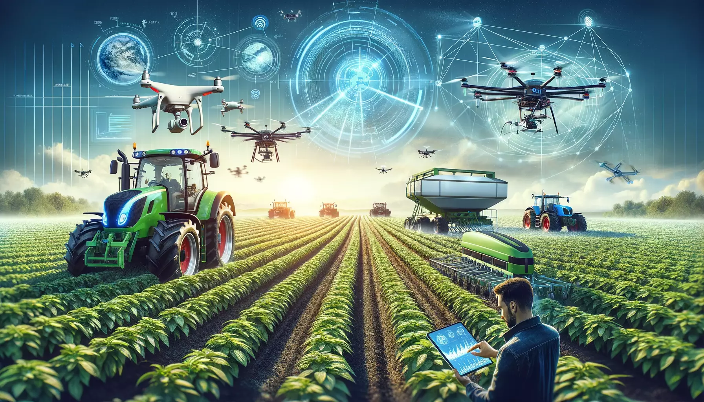

Resources for Modern Farming

🌿 Crop-wise Guidance
Best practices for wheat, rice, sugarcane, cotton, pulses, and more.
💧 Water Management
Drip irrigation, rainwater harvesting, & efficient water budgeting.
🧪 Soil Health & Fertilizers
Soil testing, pH management, and smart fertilizer application.
📱 Digital Farming Apps
Weather alerts, pest detection & mandi price tracking.
🚜 Farm Machinery
Affordable machinery rentals and subsidy info.
🌾 Organic Farming Techniques
Pesticide-free and compost-based sustainable farming.
🐄 Livestock Management
Care, nutrition, and health for dairy and poultry animals.
🍇 Horticulture Resources
Techniques and schedules for growing fruits and vegetables.
🛰️ Remote Sensing & Drones
Modern tech for crop monitoring and precision farming.
💹 Market Intelligence
Price trends, demand insights, and MSP awareness.
🏛️ Government Training
KVK workshops, online demos, and certification courses.
💼 Agri Startups & Funding
Startup support, seed funding, and innovation programs.